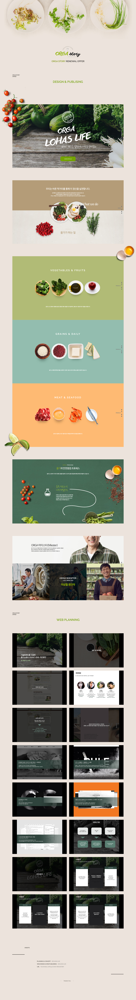

- ORGASTORY Renewal Offer
- 회사에서 신입사원의 개인발표를 위해 준비했던 사이트. 풀무원 계열사 올가 홀푸드의 브랜드 소개 페이지 사이트인 올가 스토리의 프론트엔드 개선방안이라는 주제를 가지고 작업을 진행하였다. 기존의 올드한 느낌과 가독성이 떨어지는 구성, 통이미지 형태의 유지보수가 용이하지 않은 형태 등을 개선하기 위해 최신 웹 트렌드를 파악하고 이를 정리하여 개선 방향성을 기획한 후 디자인 및 퍼블리싱을 진행하였다. 기존 텍스트 위주의 홈페이지에서 핵심 정보를 제외하고 텍스트의 양을 현저히 줄이고 직관성을 높여 올가 홀푸드가 지니는 브랜드의 느낌을 전달하는데 더욱 집중하였다.
-
Concept:Intuitive, Interactive, Vivid, Fresh, Clear
Date:2016.01-2016.03
Color:blackwhitelightgray
Skills:Ps + HTML5 + CSS3 + jQuery
-
My role:Plan, Concept, Design, Coding
go to site view proposal - 